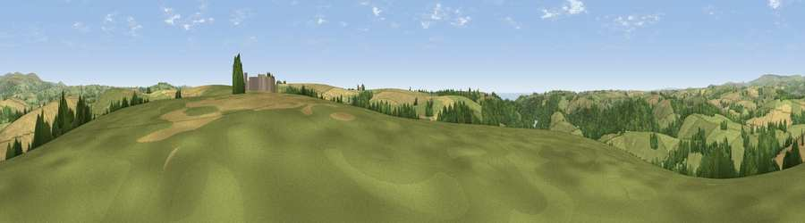

Viewpoint near Modbury
#8231 in England · top 19% of its area beats it · near ModburyThe view, rendered

A 360° render of this exact spot computed from the terrain model, tree cover and land cover — summer colours, afternoon light, calibrated against photographs of famous viewpoints. Real trees, hedges and buildings will differ in detail.
The panorama
Grey silhouette: terrain skyline in each direction (720 bearings, Earth curvature and refraction included). Dashed green: skyline with trees (+15 m) and buildings (+8 m) as obstacles. Blue strip: how far the ground is visible on each bearing.
Where the view opens
Wedge length = distance to the farthest visible ground on that bearing (vegetation-aware). Rings at 10, 25 and 50 km.
What fills the view
49% grassland · 28% cropland · 21% woodland · 1% water ·
Angular shares of the visible panorama (visual magnitude), not map area. Landscape diversity 0.48 (0–1 Shannon).
Key numbers
More beautiful places nearby
The staircase of upgrades: each row has a higher view potential than everything closer. Driving times are estimates from straight-line distance, calibrated against real road routing — check an actual route before setting out.
| Place | Direction | Drive | Score |
|---|---|---|---|
| Seven Stones Hill | SE · 2 km | ~5 min | 69.2 |
| Viewpoint near Mothecombe | SSW · 4 km | ~9 min | 76.2 |
| Viewpoint near Mothecombe | SSW · 4 km | ~10 min | 78.6 |
| Western Beacon | N · 8 km | ~16 min | 81.9 |
| Viewpoint near Hope | SSE · 12 km | ~22 min | 84.4 |
| Viewpoint near East Prawle | SE · 19 km | ~32 min | 84.6 |
| Pencarrow Head | W · 49 km | ~70 min | 86.0 |
| Viewpoint near Stenalees | W · 64 km | ~87 min | 88.0 |
50.33450, -3.90687 · source: screening · position refined by local search. Computed location — check access rights before visiting.